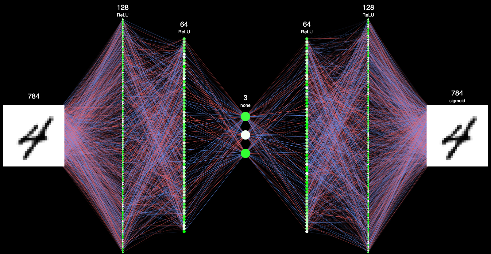

Hello and welcome to the Tam High Computer Science and Machine Learning Club homepage. If you are interested in learning how to program, taking your skills farther, or creating amazing projects the Computer Science and Machine Learning club is for you. Don’t worry if coding sounds intimidating or if you are basically a pro, everyone is welcome.
This year, we plan on hosting hackathons and game jams in which everyone will participate. If you have an amazing idea, but are unsure of how to express it in code, our talented array of Club Officers will help you make your CS dreams reality.
We live in a community full of people who do interesting things resting to computers. My neighbor literally helped design the internet. Tech Talks are where we will bring interesting people to tell you about their jobs and experience
We want to hold events for everyone to demo their projects to the community. This is intended to give a bit of purpose to all your hard work through bragging to your parents.
Recentaly Linus built an auto encoder that distills pictures of number down to three number before creating recreations.
What is an autoencoder? It is a neural network that takes an input, simplifies it, then recreates it. (If you don’t know what a neural network is we will walk you through it)
An autoencoder starts to get useful when you split up the halves. For example you could distil an image down into just three numbers then reconstruct it from scratch. This would allow you to transmit three numbers instead of a 28 X 28 grid. You can see this in action in the video below. If you want to learn how to do cool things like this get in contact.
Join our remind by texting @tamcsclub to 81010.
Fill out a form about your interests and abilites here